1과목: 기초의학 및 의공학
1. 그림의 ECG 그래프와 심장의 동작 중에서 잘못 연결된 것은?
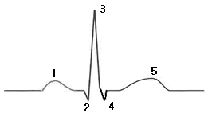
2. 정상적인 심장 전도 순서와 일치하게 나열된 순서는?
3. 금속저항 온도계를 이용한 온도측정 회로에 큰 전류가 흐르도록 설계해서는 안 되는 이유는?
4. 어떤 금속의 반전지 전위(Half-cell potential)에 대한설명으로 옳은 것은?
5. 의료용 센서를 일반 센서와 비교할 때 추가적으로 고려해야 할 사항에 속하는 것은?
6. 탄성한계 내에서 압력 또는 변위에 따른 전선의 길이,직경의 변화를 이용하는 트랜스듀서는?
7. 인체를 이루는 체강 중에서 심장과 폐가 존재하는 공간은?
8. 생체전기 신호측정에서 전극에 대한 설명으로 옳지 않은 것은?
9. 안전 상태에서 폐포내 공기의 이산화탄소 농도는 얼마인가?
10. 최대한의 노력으로 공기를 들이마셨을 때, 폐 내에 존재하는 공기의 양은?
11. 다음 중 동맥혈압이 가장 높은 인체의 부위는?
12. 다음 중 일회용 금속판 전극을 사용할 수 없는 곳은?
13. 방향과 관련된 다음 해부학적 용어의 ( )에 적당한 것은?
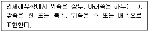
14. 센서 중에서 광전효과 사용하여 빛을 감지하며 광전자방출용 음극과 여러 개의 전자 방출용 전극인 다이노드, 2차 전자를 수집하는 양극의 plate가 진공관 안에 봉입된 구조로 이루어진 센서는?
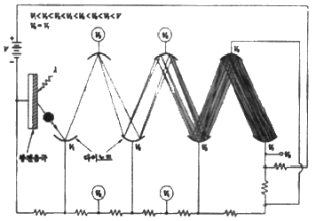
15. 생체신호 측정용 전극에서 유리모세관을 이용하여제작되며, 일반적으로 3mol의 KCI을 봉입하고 와이어전극을 삽입하여 만들어지고, 전극으로는 은-염화은이 많이 이용되지만, 스테인리스강으로도 제작되는 전극은?
16. 열전쌍의 특성으로 옳지 않은 것은?
17. 세포막의 능동적 이동에서 운반체에 의한 수송기전이 갖는 3가지 특성이 아닌 것은?
18. 광전식 혈량 측정 장치에서 측정되는 맥파의 전파속도를 2배로 올리려면 영(Young)의 탄성계수를 몇 배로 하여야 하는가?
19. 각성 시에 전두부에서 주로 나타나는 뇌전도 파형은?(오류 신고가 접수된 문제입니다. 반드시 정답과 해설을 확인하시기 바랍니다.)
20. 실무율에 대한 설명 중 옳지 않은 것은?
2과목: 의용전자공학
21. 심전도 기록지 속도가 40[mm/s]일 때 평균 R-R 간격이 20[mm]일 경우의 심박수는?
22. 생체계측을 위한 기본 구성 중 센서에 대한 설명으로 옳지 않은 것은?
23. R-L-C 직렬회로에서 R = 4[Ω], XC = 5[Ω], XL = 8[Ω]이고, 전압 V = 100[V]인 사인파 교류전압을 인가했을 때 이 회로에 흐르는 전류는?
24. 생체신호의 증폭을 위한 증폭기에서 증폭기 감도는 입력전압을 a, 출력전압을 b로 할 때 b/a의 비를 전압증폭률(A)이라고 하면 전압증폭률의 대수치를 몇 배하여 전압이득(dB)을 나타내는가?
25. 클록이 있는 RS플립플롭에서 클록 펄스가 0 일 때, 이 회로의 기능은?
26. 사이리스터를 구동할 수 있는 최소입력전류를 무엇이라 하는가?
27. 펄스 변조 방식 중 아날로그 변조 방법이 아닌 것은?
28. 유도성 센서의 생체 변위 측정 원리는?
29. 다음 광원 중에서 단색광, 평행광, 동위상이며, 고에너지 집속이 가능하고, 파장 및 에너지 선택이 가능한 것은?
30. 삼각파 교류에서의 파형률은?
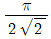
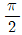
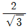
31. 무한히 넓은 두 장의 도체판을 d[m]의 간격으로 평행하게 놓은 후, 두 판 사이에 V[V]의 전위차를 가한 경우 도체판의 단위면적당 작용하는 힘[N/m2]은? (단, 유전율 : ε0)
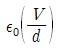
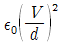
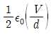
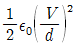
32. JK플립플롭에서 Jn = 0, Kn = 1 일 때 클록 펄스가 1상태라면 Qn+1의 출력상태는?
33. 반지름이 6400[km]인 진공 구의 정전용량[F]은 약 얼마인가? (단, 진공의 유전율은
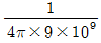
[F/m])34. 3분 동안에 180[J]의 일을 하였다면 소비 전력은?
35. 반도체의 특성과 관계없는 것은?
36. 다음 중 마이크로프로세서의 성능을 비교하기 위한 척도로 적절하지 않은 것은?
37. PN접합 다이오드에서 다음 중 어느 때 공핍층이 가장 넓어지는가?
38. 입출력 인터페이스에 대한 설명 중 옳지 않은 것은?
39. 이상적인 연산증폭기의 설명으로 틀린 것은?
40. 멀티바이브레이터의 특징은?
3과목: 의료안전·법규 및 정보
41. 컴퓨터에서 사용하는 정보 양의 단위인 1메가바이트[MB]는 다음 중 어느 것과 같은가?
42. 의료용구의 전기 기계적 안전에 관한 공통 기준규격상 휴대형 기기에 부착한 운반용 핸들이나 손잡이는 핸들 및 그 장치수단에 그 기기 중량의 몇 배와 동등한 힘을 가한시험에서 규정한 부하에 견뎌야 하는가?
43. 의료기기법상 의료기기 취급자에 해당하지 않는 사람은?
44. 병원의 관상동맥질환 처차실, 심혈관조영실, 마취실 등 장착부를 환자의 심장 부위에 삽입 또는 접촉시켜 사용하는 의료 장소의 접지 방법으로 옳은 것은?
45. 의료기관에서 나오는 세탁물을 처리할수 있는 자는?
46. 초전도 MRI 장치에 대량으로 사용되는 가스는?
47. 정보시스템의 보안을 위해 고려해야 할 요소가 아닌 것은?
48. PACS의 임상적 파급효과 중 틀린 것은?
49. 환자의 임상진료에 관련된 모든 정보의 보관소로서 임상의사의 기억을 보조, 의사결정 과정의 직접적 도구역할을 하며 병원, 임상전문가, 보험회사들 사이의의사소통의 중요한 매개체 역할을 하는 것은?
50. 의료기기법상 의료기기 제조업 허가를 받을 수 있는 사람은?
51. 1980년대 중반부터 우리나라의 대형병원에서는 병원정보 시스템을 도입하기 시작하였다. 시스템을 도입하게 된 가장 큰 원인은?
52. 의료가스 중 에틸렌옥사이드 의 용도로 옳은 것은?
53. CF형 일반 의료기기의 단일고장 상태에서 접지누설전류 허용값은?
54. 현수지지특성이 마모, 녹 재료의 노화나 경시변화에 따른 손상이 예측되는 경우, 관련 현수지지부품의 안전율 기준은?
55. 의료가스의 흐름, 공급압의 하락 및 공급장치의 기능불량을 추적하고 파악하기 위해 필요한 시스템은?
56. 의료기기법령상에서 제시하는 의료기기 임상시험 실시기준에 해당하지 않은 것은?
57. 의료기기법령상 다음 ( ) 안에 알맞은 내용은?
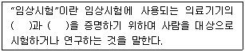
58. 의학 자료의 코드화에 대한 설명으로 옳은 것은?
59. DBMS에 대한 설명으로 옳지 않은 것은?
60. 전자파가 인체에 가하는 작용이 아닌 것은?
4과목: 의료기기
61. 다음 중 심박출량의 정의로 맞는 것은?
62. 초음파를 이용한 뇌혈류진단기로 측정할 수 없는 생체 신호는?
63. 레이저 발생장치의 구성에서 레이저 매질로부터 방출된 빛을 모아 한 방향으로 내보내는 장치를 말하는 것은?
64. 임상진단기기 중 하나로 시료를 회전시켜 원심력작용으로 특정 무게 또는 비중을 갖는 성분들이 서로 분리, 정제, 농축되는 원리로 액체 속의 고체입자를 분리하는 장비는?
65. PET에서 해상도에 관여하는 인자로 옳은 것은?
66. 영구형 페이스메이커의 특징이 아닌 것은?
67. 혈액투석에 대한 설명으로 틀린 것은?
68. X-선관에서 발생되는 X-선의 성질에 대한 설명으로 옳은 것은?
69. 인공호흡기의 호흡조절방식 중 대상자의 환기노력과 동시에 공기를 전달하는 방식은?
70. X-선을 감지하는 장치에 관한 설명으로 적절하지 않은 것은?
71. 감마카메라를 구성하는 요소들에 대한 설명으로 틀린 것은?
72. 체외충격파쇄석기에서 금속막을 전자석으로 진동시켜 발생되는 압력파를 집속시켜 충격파를 만드는 방식은?
73. 수액펌프의 종류 중 회전형 롤러가 장착되어 Ⅰ,Ⅴ관재료를 환자측 방향으로 회전하면서 압축하여 유체의 흐름을 밀어내는 방식으로 동작하는 것은?
74. 방사선 치료에 대한 설명으로 틀린 것은?
75. 다음 중 CT-번호가 가장 큰 것은?
76. 체내에서 발생하는 심음이나 호흡음을 비롯한 동맥음, 장잡음, 혈관음을 청취하여 몸 상태의 이상 유무를 확인하기 위해 사용하는 장비는?
77. 전기치료기를 주파수에 따라 분류할 수 있다. 중주파전류는 1000~10000Hz 영역의주파수를 갖는 전류를의미한다. 이러한 중주파 전류는 주로 어떤 치료에 응용되는가?
78. 다음 그림은 마취기의 구성도로서 크게 가스공급부와 호흡회로부로 나눌 수있는데 마취가스 제거장치는 어느 곳인가?
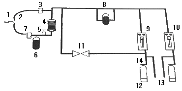
79. 환자감시장치에서 마취 환자의 자발호흡 상태 또는 환자의 환기상태를 평가할수 있는 기능은?
80. 직접혈압측정에서 혈압 파형을 왜곡없이 기록하기 위한 방법으로 옳지 않은 것은?
5과목: 의용기계공학
81. 생체재료의 표면 특성 분석법 중 재료의 화학적 결합을 분석하는 시험법은?
82. 단면적이 100cm2인 물체에 200N의 인장하중이 작용할 때 응력(stress)은?
83. 다음 ( )안에 알맞은 단어를 옳게 나열한 것은?
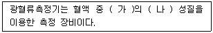
84. 두께 h이고 넓이가 A인 판이 힘F에 의하여 속도 u로 점도가 η인 유막 위를 미끄러질 때 단위면적당 힘에 해당하는 유체속의 전단 강도 γ는?
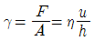
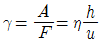
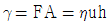
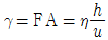
85. 자전하는 양자가 강한 외부자기장에 노출되었을 때 그 외부자기장을 중심으로 일정한 각을 유지하며 회전하는 현상을 무엇이라 하는가
86. 두 개 이상의 금속원소로 구성된 기기의 부식에 대한 설명으로 옳은 것은?
87. Ti의 특성을 잘못 설명한 것은?
88. 정형외과적으로 사용되는 임플란트를 설계하기 위해서는 골(뼈) 조직의 기계적 특성을 파악해야한다. 다음 중 골조직의 기계적 특성에 영향을 미치는 인자가 아닌 것은?
89. 생체적합성, 생체안전성 평가에 대한 설명으로 틀린 것은?
90. 초음파 탐측자의 초음파 발생소자가 음파를 발생시키는 주요 원인은?
91. 카본 세라믹의 특성으로 옳지 않은 것은?
92. 방사선이 생체에 미치는 영향의 조합으로 틀린 것은?
93. 수술용 흡수성 봉합사로 사용되는 의료용 고분자 재료는?
94. 다음 중 올바르게 설명하고 있는 것은?
95. 전기적 안전에서 가장 중요한 것은 전기쇼크이다. 다음 중 전기쇼크에 대한 설명으로 틀린 것은?
96. 의료용 스테인리스 스틸을 구성하는 원소 중에서 가공성을 좋게 하기 위하여 전성 향상의 목적으로 첨가되는 원소는?
97. 지면으로부터 v의 속도로 윗방향으로 던져진 공(질량 m)이 올라갈 수 있는 최대 높이는?
98. 운동량과 충격량에 대한 설명 중 틀린 것은?
99. 정상 보행시 유각기와 입각기의 비율로 가장 적절한 것은?
100. 혈액응고에 관한 설명으로 옳지 않은 것은?